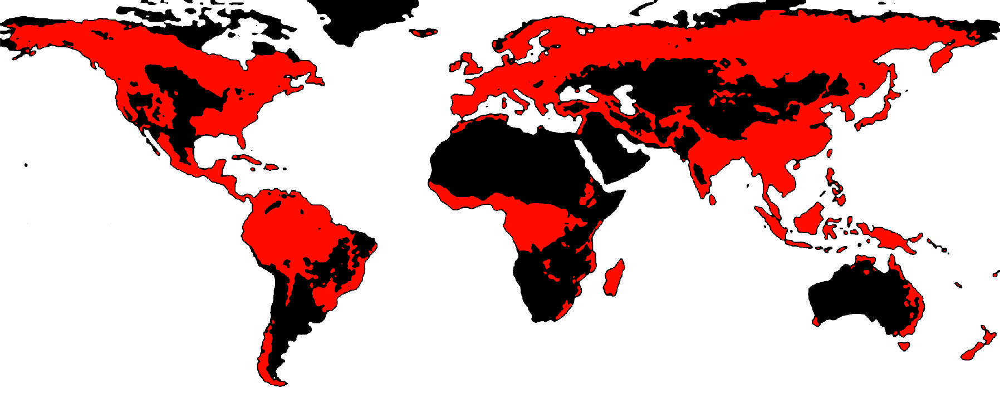

Gymnogyps californianus - The California condor
Part 1
For over 40,000 years, the California condor has been soaring the great north American skies. This long history dates back to the Pleistocene Epoch where most of the world was covered in snow glaciers and before humans ever came to America.
It’s long history with its land means its significance to it is great, both within its ecology and culturally through countless stories passed down by mouth for generations by Native Americans. Through its unique diet of carrion, they allow new life to prosper from the dead.
These giant birds are known as a symbol of death, renewal and rebirth thanks to their recognizable shape, unique behavior and diet -however in recent times, things have changed, including the way we think about animals.
As a scavenging animal, it easily serves as a role of a sentinel species. The condors sensitivity to the life and toxins of the animals that it eats is present as anything the carcass has eaten, the condor eats as well. This unique position means that the well-being of the condors can roughly translate to how well off the current ecosystem health is.
Having a diet that consists of both marine and terrestrial carrion means it can determine the heath of both ecosystems in the area.
Historically throughout the Pleistocene epoch, their range stretched along the entire continent of America. This range did not last however, as the larger terrestrial megafauna (65% of all megafaunal species) around the area began to die out. At the end of the north American ice age era around 12,000 years ago, the condors range became restricted to between the west coast of America to the Rocky Mountains range.
As the animals it fed on died out, the California Condors suitable environment became constricted. This is one such example of a significant event reflecting back on scavenger species. Although their range was restricted, they still thrived throughout their range in numerous numbers until very recently in history. [1]
So why do these birds serve as a case study for our treatment of the environment now?
Why should we care?
20th Century - Missing birds
It was very quickly noticed at the turn of the 20th century that the condors were beginning to go missing. In the 1940’s, the first species wide analysis on the population of the California condors was conducted by Carl Koford as spotting of the species were far and few between. In his own experience anecdotally, within the San Francisco areas as he realized that they were “extinct or very rare.” Its through this where he and his associates recognized that the condors have largely disappeared throughout the north western states, although no one knew specifically why.
Caucasian settlers often had little interest towards natural history. This meant that documentation of natural wildlife was very little and almost all anecdotal. All this meant that finding out why these birds went missing became more difficult, especially considering that the condors have no known significant natural enemy species. Native American accounts of the birds along with archaeological findings largely became some of the only reasons we know condors existed in the northern parts of America [2]
By the 1960’s it was clear that intervention was likely needed for the long term sustainability of the species. Early attempts to rehome these birds often ended in failure as techniques for wildlife rehabilitation have not been developed yet. By this time, it was predicted that fewer than 100 birds existed in the wild and so time was of the essence to bring these birds back from the brink. The US department of Forestry had to be careful in investigating the condors lest they accidentally worsen their already small numbers through breaking up existing pairings or injuring birds during capture.
Audubon associates then pushed desperately for federal action to protect the species from being wiped out completely. They lobbied extensively for condor protection and additional research funds lest they do not find out what to do in time to save the species.
The cost of cost cutting
The cost of cost cutting
Biodiversity is one of the fundamental reasons that life on earth has succeeded for as long as it has today. For millions of years, many different creatures have evolved to fulfill different niches in the earth's ecosystem. These roles often impact many others indirectly as well, creating a web of interwoven systems made to support the existence of life as a whole.
It is the reason why materials like rubber and latex exist. The reason we have sheep for wool and vegetables to eat, but for years, this balance has been under threat. This is by no means new news, but just how bad some things have gotten may be.
The condor is only one such example of a bird that signals the loss in biodiversity within its environment. In the real world, there are many more.
Part 2
Livestock make up 62% of the world’s mammal biomass; humans account for 34%; and wild mammals are just 4%. [3]
Livestock make up 62% of the world’s mammal biomass; humans account for 34%; and wild mammals are just 4%. [3]
Wild animal populations have declined by 69% since 1970.
Freshwater marine populations have declined by 83% within the same time period.[4]
1970
2020
Land clearing has had a direct impact on the spaces that wild animals can occupy. Global deforestation peaked in the 1980’s, but continues to occur even to the modern day. Currently one third of forests are now gone. This is twice the area of the united states. 70% of this land has been converted for farmland use. The conversion of natural habitats for agriculture, urban development, and other human activities is a significant cause of biodiversity loss. The way we run our global food systems currently put 85% of the 25000 endangered species at risk of extinction. [8]
Land clearing has had a direct impact on the spaces that wild animals can occupy. Global deforestation peaked in the 1980’s, but continues to occur even to the modern day. Currently one third of forests are now gone. This is twice the area of the united states. 70% of this land has been converted for farmland use. The conversion of natural habitats for agriculture, urban development, and other human activities is a significant cause of biodiversity loss. The way we run our global food systems currently put 85% of the 25000 endangered species at risk of extinction. [8]
Map modified from: [EarthLab] - [Global Forest Watch]

In the end, nothing is free. Many of these statistics not only have grave ecological implications but also economic ramifications in the form of a loss of natural services, self management of the environment and stability of resources.
For example, food chains may face steep increasing in prices for produce because of a lack of pollinators or variety in plants or a lack of protections against pathogens. This is already happening for several different produce such as bananas, potatoes and wheat.
More than half of the worlds GDP relies on the function of natural ecosystems, and as such we should treat the planet not solely as a step to short term wealth but a guise for long term sustainability. [9]
1960’s - Concerning Trends
The 25 year period after the 1900’s provided the largest era for bird extinctions in recent history. These birds are often biological indicators of the health of an environment as they can be incredibly suceptable to the heath of their surrounding habitat. The resulting loss in a numerous amount of species already means that many systems are degrading [10]
Within the 1970’s, there was growing awareness of the human impact on the environment as pesticide use, logging and harmful chemical use was the norm. Temporary measures that save money in the short term such as the use of plastics contributed greatly to long term costs through declining human and animal health. The Santa Barbara oil spill - an event that killed over 10,000 birds, suffocated all marine life in the area (therefore causing a significant loss in fishing income) and left the area smelling like petroleum for the foreseeable future- was a significant wake up call that our negligence on the natural health of the world had real world impacts.
Various Hawaiian birds:
More than 30% of birds that have gone extinct in recent history have been native to the island nation of Hawaii. This has been due to a multitude of factors such as human encroachment, invasive species that hunt the birds and/or eat their food sources and disease.
Carolina Parakeet (1918)
Was one of the only parrot species within the US. Having gone extinct before conservationism was a thing, no official reason exists as to why this bird went extinct - however, some reasons propose deforestation and their unique behavior that made them easy to be hunted.
Passenger pigeon (1914)
Was once massively abundant within Northern America, having anecdotally been reported as occasionally flying in such great numbers that they blocked out the sky. Initially only having a slow decline throughout the 19th century, it then faced a steep collapse as European settlements hunted them as cheap food.
Alaotra Grebe (2010)
Their restricted range due to habitat deforestation left the Aloatra Grebe at risk of becoming extinct. The final nail in the coffin for this species was the later introduction of an invasive species of carnivorous fish (blotched snakehead).
The Madagascar Pochard, another similar bird belonging to the same area is currently critically endangered. These birds still survive thanks to luck and recent conservation efforts.
In Madagascar alone, one eighth of birds face a risk of extinction.
To prevent the loss of an iconic species, the US federal government funded over $20 million USD for the California Condor conservation project - The most costly conservation project for the united states in history. With significant funds in tow, resources could be allocated towards further research on how to protect these animals from extinction.
The next course of action was to find the true population total of the condors by tracking them. From there, they can find active nest sites and feeding locations. Lastly, the source of mortality for the birds were to be found too. Through careful tracking, the information gathered from this could be used to help build back previous condor populations.
It was here where Koford’s initial examination of the birds a few decades prior was much more greatly recodnised as it recorded major clues as to the birds recent population decline. Koford examined that Condor chicks were quite high despite their flat-lining population and therefore determined that the main cause of death was mortality. Not from age.
Earths biodiversity is currently in a state of crisis... but how did it get to this point?
The reasons are many, complex and multifaceted. Many reasons can be tied to mismanagement of the world's resources and over-exploitation of the environment, but what does that mean?
part 3
2.3 billion
Reason 1: Unsustainable Resource Exploitation
The primary drivers of biodiversity loss are rooted in how humans manage and capitalize on natural resources. The overexploitation of resources contributes to a pressing problem of long term unsuitability as resources are often taken at a higher rate than what is given back to the environment. This can be seen in logging, overfishing and hunting, all of which have had significant impacts on declining animal populations. As a specific example, it is currently estimated that at our current rate of seafood consumption, fish could be extinct by 2048. Atlantic cod were among one of the most prevalent fish in American oceans and are a common food source, however they are classified as a vulnerable species. This species is often fished beyond replacement levels and are currently endangered in Canada. There are a further plethora of problems in relation to how they are fished, but the issue is that this is species is at risk, and it is not alone. Over one third (37.7%) of fish are currently being fished past sustainable levels. Atlantic cod stocks plummeted in the 1990’s and have never recovered since. [ 11, 12] Simply put, the rapid industrialization of human society places pressure on systems to take up more resources than what the ecosystem can handle. This not only has ramifications for the ecosystem but for the imminent future of human society through there not being enough resources left.
Reason 2: Economic and Political Systems
The underlying causes of biodiversity loss are strongly tied to economic and political structures. The short-term profit focus of many businesses and political systems often prioritize short-term economic gains over the long-term well-being of ecological systems and even long term economic sustainability. These short-term focuses may come in the form of culling forests for quick money, mining of coal, privatization of energy industries or regulatory bodies, or exploiting more resources than what can be recovered later (like in the case of overfishing). This is often compounded by a lack of efficient policies and governance towards environmental sustainability. Within the US, it is very likely that a significant impact of the loss of biodiversity and ecosystem health will be felt within the next few decades, if not now. Crop yield projections often state dire statistics. Within the midwest alone, shortsighted policies towards climate change means that crop yield is likely to drop by 50 to 70 percent annually within the century. [13] Its very clear at this point that intervention is needed at a global scale in order to prevent further losses for the future. Educating the public and policy makers on key environmental issues is a step in the right direction for proper ecological management.
Reason 3: Climate Change Mismanagement
While not the current leading cause, climate change is an increasingly significant factor in biodiversity loss. The doubling of greenhouse gas emissions since 1980 has raised global temperatures, affecting ecosystems worldwide. Its due to this, climate change is expected to become the dominant driver of biodiversity loss in the coming decades [14 , 15 ] Due to the disruptions caused by climate change, many species are forced to alters habitats, shifts species ranges, and have disruptions to ecological timing. All of these threaten the survival of many species. These changes in the environment are culminating into what is known as the 6th mass extinction event. [16] This is to say that improper policies that do not address the root cause of biodiversity loss and climate change are not helping, and that long term overall sustainability should be the key focus of current policies in the modern day. Addressing these management issues requires a fundamental shift in how we value and interact with nature. It calls for systemic changes in our economic models, policy frameworks, and individual behaviors to prioritize long-term ecological health alongside human development. With the rise of technologies such as AI and quantum computing and other high consumption inventions, it is important to discuss the resource demand for such equipment and to consider how systems can be managed to keep them sustainable and not used solely for profit.
Cost of Las Vegas Sphere vs California Condor Recovery Program 1:92
20 million USD vs 2.3 billion USD
In 1979, the US government established the ‘California Condor Recovery Program’. This program was a result of the growing care and attention driven to environmental causes within the decade, however they had a controversial and potentially risky plan in order to save the species.
1980 - Conservation debate
It’s during this period of time where captive breeding techniques for the California Condor have improved significantly. Here, the San Diego Wild Animal Park was leading the way to developing a successful captive breeding program for the birds where this was later expanded into other facilities - much to the dismay of the National Audubon Society. In the 1980’s however, Condor populations continued to significantly decline. Half of all existing known populations disappeared without a trace. When spotted in the wild, three for every four condors were witnessed to have been dead or dying of lead poisoning. By 1982, only 22 condors throughout the world were known to conversationalists and biologists alike in the wild. There was a strong disagreement over the types of policies that should be enacted to save the species.
National Audubon society + Koford
Although they first found that the condors were being killed unnaturally, this group argues that the human harassment/encroachment on condor territory is what is causing their decline.
“Must we further dilute the natural scene by manhandling the birds and injecting cage-raised stock into condor society?[...][l]et us keep condors forever free.”
lden Miller, Ian McMillan, Eben McMillan, and later - Sandy Wilbur
This group theorized that while land use changes did impact the condors, the amount of food available should be more than plenty to support their population. Despite the US Congress designating protected land for the condors, something in their own environment was still killing them.
Eventually, in 1986, all known California condors were rounded up and placed into human care with a total of 27 birds captured in total. All were given names and tags. For the next 5 years, these birds would be the only known condors to exist; The birds would be classified as extinct in the wild.
[18]
Between the 1960’s and 1980’s (and to even today), various studies were then conducted to find the real reason for the condors disappearance. Necropsies became a valuable source of information for finding out what caused the mortality of this specific species.
After a series of investigations, it was found that there were several reasons behind the decline of this species. Almost all of them were human related.
Lead poisoning - Due to ingestion of poisoned carcasses shot with lead bullets. These were typically coyotes who farmers shot to protect their produce. This cause of death was the most significant among the Condor population. In most Condors, it was found that the majority of them had some form of lead poisoning.
Shooting - While likely not enough to cause significant population drops, it is recorded that these condors have been shot.
Trash ingestion - In one necropsy, conducted at the San Diego Zoo in 2002, pathologists discovered ‘‘12 bottle caps, shards of glass, electrical fixtures, screws and washers inside [a] turkey sized chick.’. Trash can sometimes look like bones, and so condors mistakenly eat them, thinking they are edible.
DDT contamination - DDT is a colourless and tasteless pesticide that impacted Condors as humans started encroaching on their range. When DDT makes it into the body of a condor, their eggs become brittle and more likely to break, resulting in early mortality.
Collection of eggs and feathers - while rare, poaching occured frequently enough to be a concern.
Modern day
Part 4
In 1988, a condor was successfully born in captivity for the first time. In the next few years, the condor population would soon hit 50 - almost double the population of what had been left. in 1992, the first 2 condors bred by this program flew free for the first time. 2004 marked the beggining of another important milestone as the first chick was born in the wild. From here, it was clear that human intervention not only helped the condors, but allowed them to thrive.
Things are still not all great though. This new era of released birds brought a whole new set of issues to the table. Many birds were still found to be suffering from lead poisoning and poaching became a concern once again. Many birds had to be taught to be de-acclimated to humans to prevent them from being poached or nesting near human settlements.
Even currently in 2023, 87% of birds trapped around the grand canyon area tested positive for lead poisoning [19]. The majority of condor deaths in the wild are still due to lead ingestion [Pinnacles national park condor memorial list]
Micro-trash is also an issue, as condors sometimes mistake hard plastic items for bones, which are important for calcium nutrients in young developing birds.
Despite all else, thanks to the effort of a multitude of different people and the funding sourced to save these birds, the California Condor flies free in much greater numbers than before.
So, what now?
We have built a world for profits, not for life. It doesn't have to be this way though
Conservation efforts for the California condor have been deemed successful, and now over 500 roam American skies today.
There are multiple reasons for the success of the program, but it would not have gotten off its feet were it not thanks to the awareness brought to the species, the funding that the attention brought, and an increase in education in how to protect them.
For a long time, it was possible to look up and remember all the names the condors were given. In fact, it is still possible to look up individuals that reside in certain national parks (and even see their personalities) [here and here]. It should have never get to this point in the first place, but it doesn’t have to be that way for the birds and other creatures still out there today.
Things that you can do to protect the biodiversity in your area
1. Protect local habitats
- Educate and be educated on the native plants animals around you; Their threats, and the recommended advice for preserving them.
- Try planting native plants around your area, rather than lawn where animals and insects alike cant make homes, nor have enough food to eat from. You can find what plants are good for your area [here - Audubon - find bird friendly plants for your area]
- Avoid using pesticides at all. Common weed killers can contain substences such as 2, 4-D and glyphosate. All of these are considered dangerous to wildlife, and some are carcinogenic to humans as well.
- Avoid letting cats out without being watched. Cats are some of the biggest killers to native wildlife (2.4 billion birds are killed annualy by cats within the US and Canada alone! [source] ), and so it is important to keep a close watch on your feline friends. You can find out more about the impact of cats on wildlife populations [here]
- Vote for policies where possible that help restore and preserve national parks and other important ecosystems.
- If you are within the US, urge your U.S. Representatives to cosponsor the Saving America’s Pollinators Act. The bill, H.R. 1337
- If you are within Australia, vote for local councils that support policies that foster biodiversity and/or green causes.
2. Assist, volunteer, donate to specific causes
- Be sure to research for charitable sanctuaries + national park funds. Sponsors are normally a great way to fund the livelyhood of certain animals within your area.
- [Birdlife international] is one of the largest organizations for protecting birds and has a wide ranging reach if you wish to support them. This group works with international organizations and helps monitor and safeguard key areas of interest for birds.
To help the birds in your area:
1. Make windows safer for birds
- Birdstrikes on windows in residential areas are some of the largest causes of death among bird populations. Up to 1 billion birds die yearly in the United States and Canada alone due to window strikes. [source]
- Birds cannot see glass. Paint, stickers, window screens and other decorative effects that break up glass reflections help birds see the barrier.
- To read up more on birdstrikes, you can visit [here - Cornell lab, all about birds]
2. Watch and record the birds you see
- Tracking all of the birds that exist right now is a challenge for just scientists alone, and so you can help by assisting with bird tracking by recording the birds that you see in your area. To understand how different bird species are fairing, bird sightings from the data people submit are often used.
- You can submit data to various projects such as eBird, a free web-based tool made to track birds from user observations.
- For help identifying birds, you can use the [Merlin Bird ID] app from CornellLab
“A society grows great when old men plant trees in whose shade they shall never sit.”